Azure Active Directory (SAML)
This topic explains how to configure SAML SSO with Azure Active Directory (AD).
Prerequisites
Administrator privileges on Sysdig and Azure
Configure the Sysdig Application in Azure AD
Log in to the Azure AD portal.
Select Azure Active Directory, then click Enterprise Applications.
The Enterprise applications - All application screen is displayed.
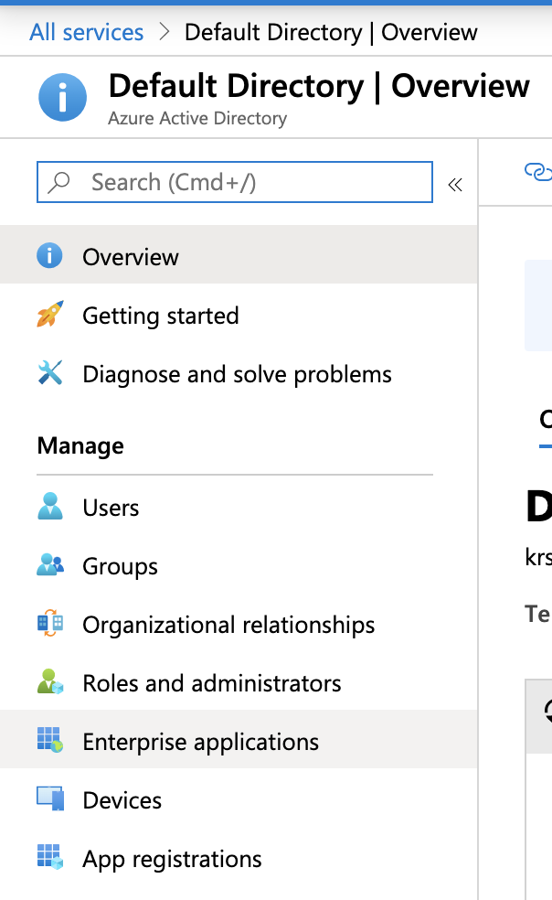Click New Application.
On the Add an Application screen, select Non-gallery application.
Give your application a name, and click Add at the bottom of the page.
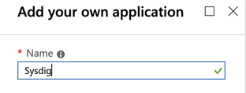On the menu, select Single sign-on.
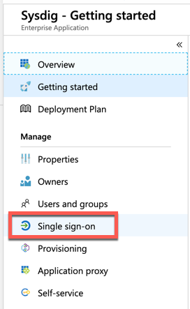Choose SAML as the sign-on method.
Edit the Basic SAML Configuration as follows:
In the configuration page, click the edit icon.
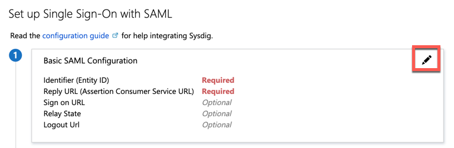Specify the following:
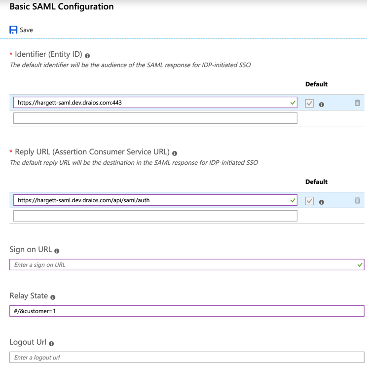Identifier (Entity ID): Uniquely identifies the Sysdig application. Azure AD sends the identifier to the Sysdig application as the audience parameter of the SAML token. Sysdig validates this as part of the SSO process.
Reply URL: Specifies where Sysdig expects to receive the SAML token.
Relay State: Specifies to the application where to redirect the user after authentication is completed. Typically the value is a valid URL for Sysdig. If you are configuring SSO for SaaS, change the relay state to reflect the correct customer number. For on-prem installations, the customer number is always 1.
For more information on configuration parameters, see Configure SAML-based single sign-on to non-gallery applications.
Sysdig-Specific Steps for Active Directory Configuration
Under SAML Signing Certificate, copy the App Federation Metadata URL.
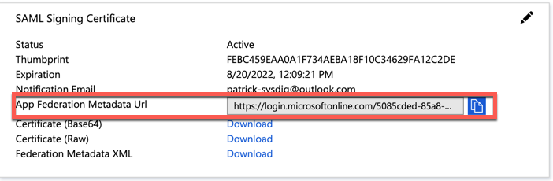Log in to your Sysdig instance as a super admin.
Navigate to Settings > Authentication, and select SAML under Connection Settings.
Enter the following:
Metadata: Enter the App Federation Metadata URL you copied.
Email Parameter: Set the value to user.mail.
Click Save.
Select SAML from the Enable Single Sign On dropdown.
Create a User in Azure Active Directory Domain
You need to create a user account in Azure Active Directory and assign it to the Sysdig application.
Log in to the Azure AD portal.
Click Azure Active Directory, and note down the domain name.
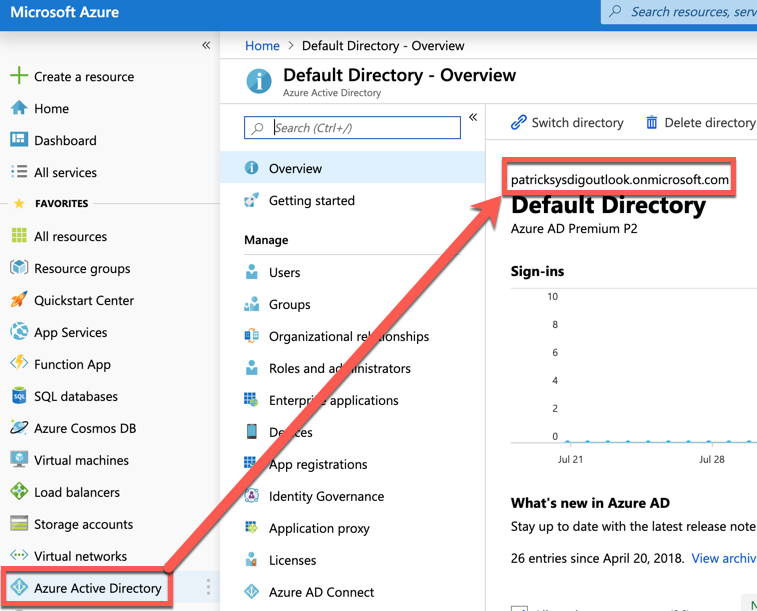Select Azure Active Directory, then Users.
The Users - All Users screen is displayed.
Select New Users.
Enter name, username, and password, then click Create.
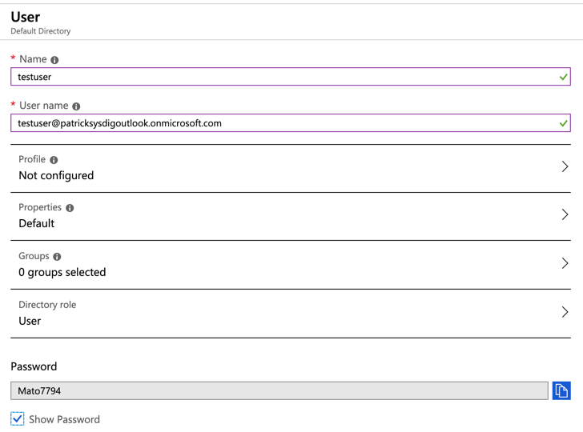Edit the newly created user and navigate to Authentication methods.
Add the Email and Alternate Email parameters. The values can match.
Assign the User to the Sysdig Application
Navigate to the Sysdig application.
Click Users and Groups, then click the Add user button.
Select the Users and Groups checkbox, then choose the newly created user to add to the application.
Click Select, then Assign at the bottom of the screen.
Enable Authentication Settings in the Sysdig Instance
Ensure that Flag to enable/disable create user on login is enabled. Typically this setting is enabled by default.
Note
if you are on Sysdig Platform versions 2.4.1 or prior, contact Sysdig Support to help with user creation.
Configuring Sysdig as a New Application
If Azure Active Directory does not allow you to create Sysdig as a Non- Gallery application, perform the following:
In Azure AD, click Enterprise Applications > New Application.
Select Application you're developing.

You will be taken to the app registration page:
Select New Registration:
Provide a name for the application you are registering.
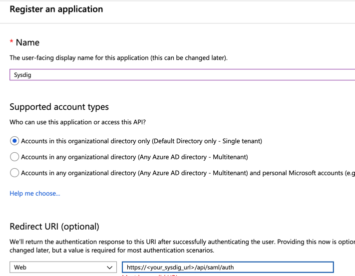Enter the redirect URI as follows:
https://<your_sysdig_url>/api/saml/authClick Register to complete the registration.
In the Overview tab click Add an Application ID URI:
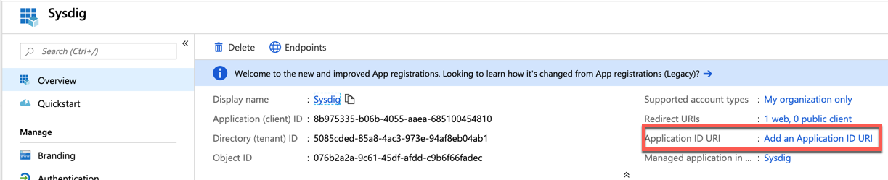Click Add a scope.
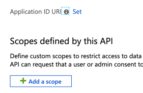Add the application ID URI as follows:
Https://<your_sysdig_url>:443
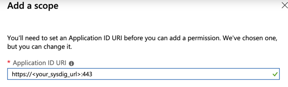In the Overview tab, click Endpoints, and copy the Federation Metadata URL:
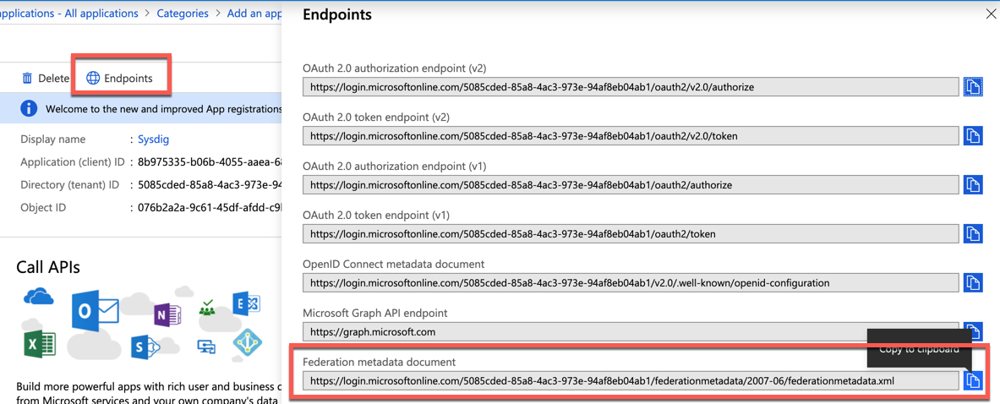Log in to Sysdig, navigate to SAML Authentication screen, and enter the Federation Metadata URL as follows:

You will still need to ensure that the user creation on login option is enabled.
Save the settings.